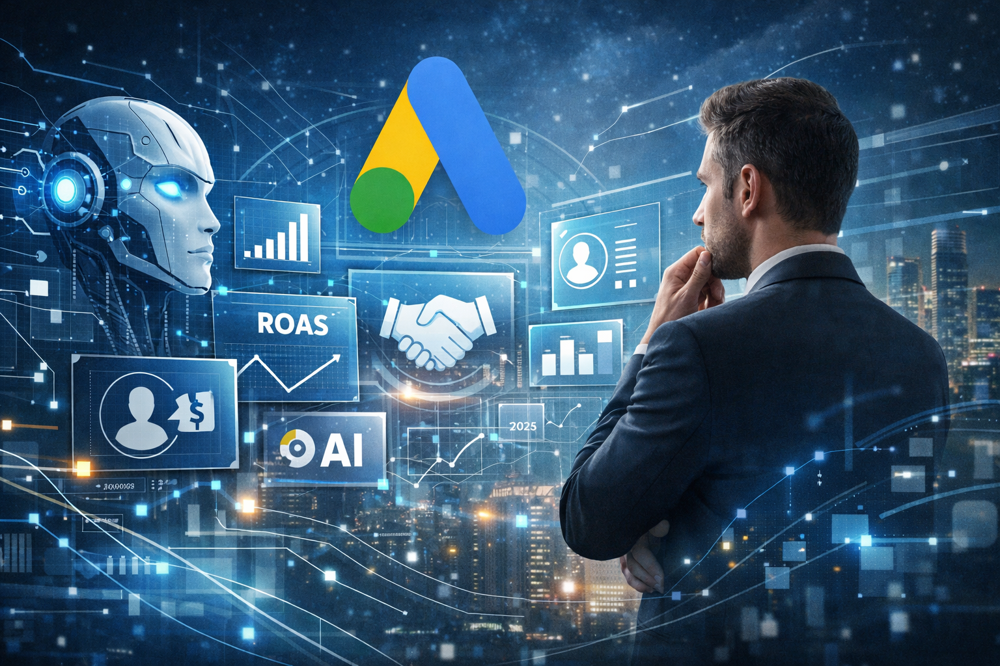

AI w Google Ads 2026: dlaczego same narzędzia nie wystarczą

AI w Google Ads 2026: dlaczego same narzędzia nie wystarczą
Google Ads w 2026 roku to zupełnie inna platforma niż jeszcze kilka lat temu. Automatyzacja i sztuczna inteligencja przestały być „opcją” — stały się fundamentem działania systemu reklamowego Google.
Dla wielu firm to ogromna szansa.
Dla jeszcze większej liczby — źródło frustracji, nieprzewidywalnych wyników i rosnących kosztów.
Bo jedno trzeba powiedzieć wprost: AI w Google Ads nie działa „samo z siebie”.
Automatyzacja Google Ads: potężna, ale bezlitosna
Google konsekwentnie rozwija rozwiązania oparte na AI:
- zaawansowane mechanizmy typu AI Max
- optymalizacja kampanii w czasie rzeczywistym
- inteligentni doradcy pokroju Ads Advisor
- coraz mniejsza możliwość ręcznego sterowania kampaniami.
To oznacza, że system:
- sam decyduje, komu i kiedy wyświetli reklamę
- sam alokuje budżet
-
sam testuje kreacje i komunikaty
Problem w tym, że AI zawsze działa na podstawie danych i założeń, które ktoś musi poprawnie zdefiniować.
Jeśli fundament jest błędny — algorytm tylko szybciej skaluje problem.
Dlaczego wiele firm „przegrywa” z AI?
W praktyce widzimy ten sam schemat:
firmy wdrażają Performance Max lub automatyczne strategie, wyniki są niestabilne,
ROAS spada albo „rozmywa się” budżet,pojawia się przekonanie: „Google Ads już nie działa jak kiedyś”.
Tymczasem problemem nie jest AI.
Problemem jest brak strategicznego podejścia do automatyzacji.
AI nie zastępuje:
- myślenia biznesowego
- zrozumienia modelu sprzedaży klienta
- właściwego definiowania celów
- interpretacji danych
I właśnie tutaj pojawia się rola partnera, a nie tylko „ustawiacza kampanii”.
Ads Advisor i AI Max — dlaczego bez interpretacji to za mało?
Nowe narzędzia Google, takie jak Ads Advisor, potrafią:
- wskazać potencjalne optymalizacje
- zasugerować zmiany budżetowe
- rekomendować nowe formaty kampanii.
Ale nie odpowiedzą na kluczowe pytania:
Czy ten wzrost konwersji jest opłacalny biznesowo?
Czy algorytm optymalizuje właściwy typ klienta?
Czy obecna struktura kampanii wspiera cele długoterminowe, czy tylko krótkoterminowy wolumen?
Bez doświadczenia i kontekstu biznesowego automatyzacja staje się czarną skrzynką, której firma nie rozumie, ale za którą płaci.
Nasze podejście: człowiek + AI, nie AI zamiast człowieka
W 2026 roku skuteczny Google Ads to połączenie:
mocy algorytmów Google,oraz zespołu, który wie, jak nimi sterować na poziomie strategicznym.
Nasza rola nie polega na ręcznym „grzebaniu” w stawkach.
Polega na:
- projektowaniu struktury konta pod algorytmy
- definiowaniu właściwych sygnałów dla AI
- kontroli kierunku, w jakim system optymalizuje kampanie
- łączeniu danych marketingowych z realnym wynikiem biznesowym.
To właśnie ten element oddziela firmy, które tylko korzystają z automatyzacji, od tych, które na niej zarabiają.
Case study: gdy automatyzacja zaczyna pracować na wynik, nie na budżet
Jeden z naszych klientów (e-commerce) zgłosił się do nas po wdrożeniu w pełni automatycznych kampanii, które „teoretycznie działały”, ale:
-
koszt pozyskania klienta rósł
-
sprzedaż była niestabilna
-
zespół nie rozumiał, co faktycznie napędza wyniki.
Po naszej stronie leżało:
-
przeprojektowanie celów pod realną rentowność
-
uporządkowanie danych konwersji
-
„nauczenie” AI, jakiego klienta ma szukać — a nie tylko jak generować kliknięcia.
Efekt po kilku miesiącach:
-
stabilny wzrost ROAS
-
lepsza przewidywalność wyników
-
pełna kontrola nad kierunkiem skalowania.
AI zrobiło swoją część.
My zadbaliśmy o to, żeby robiło ją we właściwym kierunku.
Nowa rzeczywistość Google Ads wymaga przewodnika
Automatyzacja i AI w Google Ads to przyszłość — ale przyszłość, w której:
- brak wiedzy kosztuje szybciej niż kiedykolwiek
- błędy skalują się w tempie algorytmu
- „ustawienie kampanii” to dopiero początek pracy
Dlatego firmy, które chcą realnie rosnąć, potrzebują dziś nie narzędzi, a partnera, który pomoże im odnaleźć się w nowej rzeczywistości reklamowej.
AI nie zastępuje ludzi.
Ale bez ludzi, którzy ją rozumieją, AI nie pracuje na Twój biznes.